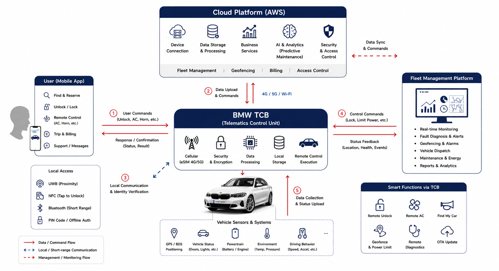
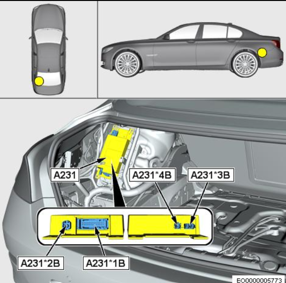
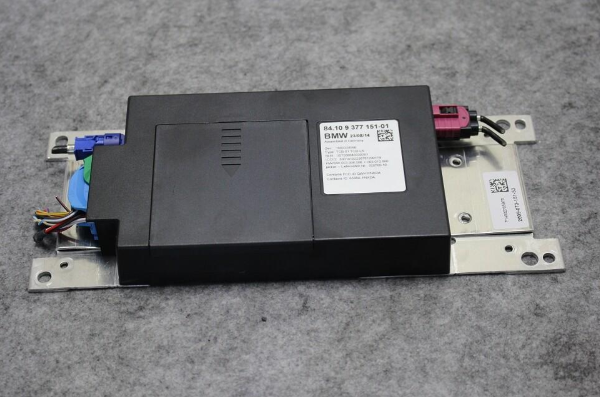

Exercise 6: Arduino IOT
BMW TCB Remote Communication Control Unit (IoT Core Device)
Exercise Content
This is the report we obtained from our search for IoT projects
Please note that some of the images in this article that are not attributed are from aigc
At the same time, some of the images are only for illustrative purposes and do not necessarily represent the actual operation of the case according to the images
Assignment Content
WHAT IS TCB?
TCB is a BMW shared car factory integrated onboard terminal. As a vehicle networking gateway, it connects vehicles, the cloud, and user ends, serving as the core hardware of SHARE NOW's shared fleet.

1. Overview of Equipment Basics
Embedded electronic control unit on board, standard throughout the vehicle, with individual vehicle coding for each vehicle, compatible with fuel and new energy vehicles. It features automotive-grade vibration resistance, high and low temperature resistance, and electromagnetic interference resistance, integrating communication, processing, encryption, and storage modules, and undertakes five major functions: data acquisition, networked communication, command execution, offline computing, and security protection.

Image source: BMW official repair manual (A231 module installation location diagram)
Referance: 6post Technology forum
2. Communication Capability
Adopts a dual communication mode of 4G/5G main link + NFC/UWB backup link, long-distance connection to the cloud based on MQTT protocol, and automatically switches near-field communication between weak network and signal blind spots. Supports local caching of data and instructions, automatically reissues after disconnection and reconnection, ensuring uninterrupted communication.
3. Data Collection
By connecting the vehicle's sensors via the onboard bus, data is collected and uploaded lightweightly: including basic information such as positioning, range, and mileage; Body condition such as doors, tire pressure, and impact impact; Power and electronic control system operating data as well as driving behavior data such as rapid acceleration and speeding provide a basis for operation, maintenance, and risk control.
4. Instruction Execution
Receiving cloud commands to complete two types of remote control: user-facing for remote unlocking, pre-activating air conditioning, and using a horn to find the car; For operation, it can restrict power, lock vehicles, and perform self-checks upon wake-up, cooperating with geofences to regulate driving ranges.
5. Offline operation
Local cache authorization information, vehicle usage data, and basic operational logic. Even when the internet is offline, unlocking and identity verification can be completed, allowing normal vehicle use; Travel and vehicle status data generated offline are automatically synchronized to the cloud after connection.
6. Safety protection
Built-in independent encryption chip, fully encrypting data and instructions. Generates a one-time dynamic signature with each vehicle use to prevent key theft; Device partition isolation permissions monitor abnormal operations and automatically alert against hacking and intrusions.

Image source: BMW TCB (A231) remote communication control unit physical photo | Source: eBay.de product page
References: eBay.de Product page (BMW TCB/A231 remote communication control unit physical product link).
7. Application value
Factory integration requires no additional modifications, reducing deployment costs. Supports full-process self-service vehicle use, combined with cloud-based solutions for predictive maintenance, intelligent scheduling, and automatic billing, while maintaining data traceability throughout the process, balancing operational efficiency with compliant risk control.
8. Core Features
It belongs to automotive-grade edge computing IoT terminals, integrating gateway, data acquisition, control, and security functions, with stability, anti-interference capability, and offline capabilities far superior to ordinary consumer-grade IoT devices.
Core work link: SHARE NOW remote unlocking process (standard networking link)
Applicable scenarios: Under normal network conditions, users can remotely unlock shared BMW vehicles via their phones, fully demonstrating TCB's core capabilities in data collection, authentication, protocol conversion, bus interaction, and data transmission.
Complete link steps:
1.User Request Reporting
The user initiates a remote unlock command on the SHARE NOW client. The device carries the user's authorization information and unique vehicle code, which is encrypted and uploaded to the shared fleet cloud server.
2.Cloud permission and order verification
The cloud backend verifies valid vehicle orders, user identity, and geofence compliance. After verification, an encrypted control command with one-time dynamic signature is generated and sent to the onboard TCB (A231) communication unit based on MQTT long connections
3.TCB Terminal Security Authentication Reception
TCB receives cloud instructions via 4G/5G main links, uses built-in independent encryption chips to verify and decrypt signatures, intercepts tampered and illegal instructions, and confirms the legitimacy and validity of instructions.
4.Protocol Conversion and Onboard Bus Forwarding
The TCB converts cloud network protocol data into in-vehicle CAN bus packets, which are sent to the vehicle's central gateway to connect external network commands to the vehicle's internal electronic control system.
5.Vehicle module execution
The vehicle gateway forwards the message to the BDC body control module, driving the door lock mechanism to perform unlocking and synchronously update the door status.
6.Closed-loop transmission of vehicle status data
TCB collects door lock status, vehicle location, and vehicle condition information in real time, packages and encrypts it, then transmits it back to the cloud, synchronously updating order status and online vehicle data, achieving operation traceability and status synchronization, with users displaying unlocking results in real time.